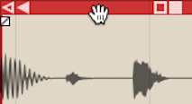
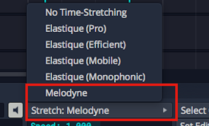
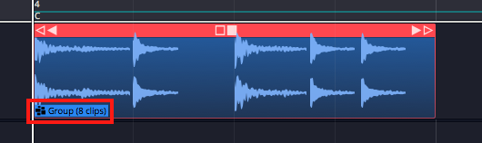
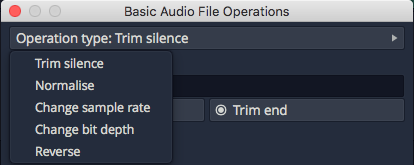

Audio Clips and Editing Audio¶
Audio clips hold your recorded and imported audio. Each one has built-in handles for moving, trimming, slipping and fading it, right on the clip.
Parts of an Audio Clip¶
An Audio clip has a header, which holds the trim and slip handles, and a body, which holds the waveform thumbnail and fade handles.

Main parts of an Audio clip: A header, B body, C clip effects
Header: Move Audio clips by dragging from the header. The header includes the clip name, the trim handles (hollow arrows at each end), the slip handle and buttons for looping, linking, clip effects and rendering.

Audio Clip Header
Body: The Audio clip body shows the waveform thumbnail and the fade handles.

Audio Clip Body
Plugins: Audio clips can host plugins directly, so you might see one or more plugins on the clip body. See Clip Effects.

Audio Clip Effects
Properties: Like most other objects in Waveform, Audio clips have many more properties and controls in the Actions panel.

Audio Clip properties
📝 Note: If you accidentally move or edit an Audio clip, you can always press Undo (Cmd + Z / Ctrl + Z).
Moving Clips¶
When you move the mouse pointer over the Audio clip header, it changes to a grabbing hand. Drag to move the clip earlier or later in time. If Snap is on, the start of the clip snaps to the grid.

Move Audio Clips by Dragging from the Header
📝 Note: The grid resolution depends on the zoom level. See Selecting and Snapping.
You can also drag Audio clips from track to track. With snap on, the clip usually stays in time. With snap off, it's easy to move the clip slightly off time; to prevent that, hold Shift as you drag, which keeps the clip's timing fixed.
💡 Tip: You can also nudge a clip to another track without changing its timing: select the clip, hold Shift and press Up Arrow or Down Arrow.
Deleting Clips¶
To delete a clip, select it and press Delete or Backspace. Cut (Cmd + X / Ctrl + X) does the same, and so does the Delete button in the Actions panel.

Audio Clip Properties Delete Button
💡 Tip: To clear the selection, press Esc.
Audio Clip Handles¶
By default each Audio clip header has three handles: a trim handle at each end and a slip handle in the centre. Turn on Show extra slip handles on clip headers in Settings > Appearance to add three more: a slip trim arrow beside each trim handle and a reframing handle next to the slip handle.
Trimming: The hollow left and right arrows at the upper corners of the clip are trim handles. Drag a trim handle left or right to trim the start or end of the clip. Trimming this way changes the Start and End values in the Actions panel. With Snap turned on, trimming snaps to the grid. To trim freely, hold down Cmd / Ctrl as you drag or turn Snap off.

Audio Clip Trim Handles
💡 Tip: To hear the audio under the mouse while you trim, turn on Options > Audible trimming in the main menu. (Default: off)
Slip editing: Slip editing moves the waveform within the clip without changing its Start, Length or End values. Drag the slip handle (the double arrow in the centre of the header) left or right to slip edit. Hold Cmd / Ctrl to override snapping while you slip edit.

Audio clip slip handle (A)
Reframing: With the extra handles turned on, drag the reframing handle left or right to reframe the clip: the clip moves but the waveform doesn't, so the audio keeps its timing.
Slip trimming: With the extra handles turned on, the solid left and right arrows inside the trim handles are slip trim handles. Dragging the left solid arrow moves the clip's Start and keeps the End where it is. Dragging the right solid arrow moves the End and keeps the Start where it is. Unlike a plain trim, the underlying waveform slips relative to the end that isn't moving.
💡 Tip: With Snap on, hold down Cmd / Ctrl as you drag to temporarily override snapping for most editing operations.
Video Clip: Basic Audio Editing
Splitting a Clip¶
Splitting is one of the most common audio edits. The quickest way:
- Select the clip.
- Place the cursor where you want to split.
- Press slash (/).

Audio Clip, Right after Split
💡 Tip: To make a lot of splits, hold down the left mouse button as you drag the cursor, and press slash (/) at each point without letting go.
The Actions panel also has a Split Clips button, with options to split at the cursor, at the In marker or at the Out marker. These actions only affect the selected clips.

Audio Clip properties, Split Clips actions
Duplicating Clips¶
To duplicate one or more clips, select them and press D. This copies the clips and pastes them straight after the originals, in one action.
💡 Tip: To use a different key for duplicating, change it in Settings > Keyboard Shortcuts (the Duplicate command in the Editing group).
Fade-in/Fade-out¶
The fade handles sit in the upper corners of the Audio clip body. Each looks like a tiny box with a diagonal line through it. Drag a fade handle inward to draw a fade-in or fade-out.

Audio Clip Fades
By default you get a linear fade; the clip's Actions panel has other fade types. For more control, edit the Fade In and Fade Out values in the Actions panel directly.

Audio Clip, Fade properties
Pitch Fade¶
Right-click a fade handle to choose between Volume fade and Pitch fade. The buttons under them pick the fade's shape. A pitch fade gives a tape-stop or tape run-up effect, and its fade graphic is shaded darker than a volume fade's.

Right-click fade handle menu, Pitch fade selected
This video tutorial demonstrates pitch fades:
Crossfades¶
A crossfade fades out one Audio clip while fading in another. To create one:
- Drag a clip so that it overlaps another one a little.
- Press X.

Crossfaded Audio Clips
The fade-out of the first clip now overlaps the fade-in of the next. You can also select the overlapping clips and click Apply Crossfade in the Actions panel. If a selected clip overlaps clips on both sides, a menu asks where to crossfade: Crossfade at the start of overlapping clips, Crossfade at the end of overlapping clips or Crossfade both ends of this clip. Adjust the fade shapes with the buttons in the Actions panel, as for any other fade.

Fade-in/Fade-out Shape Buttons
📝 Note: The fade shape buttons only change the selected clip, so select the clip on the side of the crossfade you want to change.
Auto Crossfade¶
Settings > General has a setting labelled Default auto crossfade mode, set to Disabled or Enabled. When it's Enabled, dragging a clip so that it overlaps another creates a crossfade.

Settings Tab, General page, Default Auto Crossfade Mode
📝 Note: Auto Crossfade is a property of each Audio clip, which you can toggle in the Actions panel. With it on, moving the clip over another one crossfades them automatically. Changing Default auto crossfade mode only affects clips you create or add to the Edit afterwards.
Edge Fades¶
Sometimes you need short fades at both edges of an Audio clip to avoid pops, especially after splitting a clip in the middle of a note. Waveform calls these short fade-ins and fade-outs "edge fades."

Apply Edge Fades
To add them, click Apply Edge Fades in the Actions panel. This applies 5 ms fades to the start and end of all selected clips.
💡 Tip: To give every new clip a small fade in and out automatically, turn on Create fades on clip edges in Settings > General. (Default: off)
Copy and Paste¶
The usual cut, copy and paste commands work with Audio clips:
- Cut (Cmd + X / Ctrl + X)
- Copy (Cmd + C / Ctrl + C)
- Paste (Cmd + V / Ctrl + V)
Clip Gain, Mute, & Pan¶
Clip gain is a useful mixing tool: split out one phrase, or even one note, and adjust its level. The Actions panel also has clip mute and pan.

Audio Clip Gain, Mute, Pan and Channels
Gain: Drag the slider left or right to adjust the Gain value, or click the slider and type a value. The height of the waveform thumbnail on the clip changes straight away to match.
Mute: Click the Mute icon to silence the clip. The waveform thumbnail dims to grey.
Pan (mono clips): Drag the Pan slider left or right to place the clip in the stereo field, or click it and type a value. Full left is -1.00, centred is 0, and full right is 1.00.
Pan (stereo clips): On stereo Audio clips, Pan acts as a balance control. Slide it right and the left side gets quieter; slide it left and the right side gets quieter. At the extremes, the opposite side is silent. The waveform thumbnail updates to show the effect.
All Channels (stereo clips): With one stereo clip selected, the Actions panel shows a channel button that reads All Channels while both channels are on. Click it for a menu of the clip's channels, with the ones in use ticked, and choose a channel to turn it off or on. Choosing Left, for example, turns the left side off and the button then reads Channels: Right. This doesn't just mute the left side: it switches the clip to a mono version of the right side. The waveform thumbnail updates straight away to show this.
Reversing Audio Clips¶
To make a clip play backwards, click the Reverse button in the Actions panel. The waveform thumbnail reverses, and the clip plays backwards.

Reversing an Audio Clip
📝 Note: Some arrangement edits aren't offered for clips in the clip launcher. Launcher clips play without fades, so their Actions panel has no fade, edge fade or crossfade controls, and they can't be split, merged or flattened.
Merging Clips to One Clip¶
After editing, you might want to combine several clips back into a single clip. Select all the clips with Shift-click or lasso selection. Then choose Render Clips > Merge the selected clips in the Actions panel. If the clips are on several tracks, Merge the selected clips from each track merges the clips on each track separately. With a single clip selected, the menu offers Flatten the selected clip instead.

Render Clips > Merge the selected clips
After a few moments, Waveform combines them into a single continuous clip. The other ways to render and export are covered in Rendering and Stems.

Merge Clips, Before and After
This video demonstrates merging clips:
Merge Selected Clips Video Demo
Deleting a Section of Audio Removing Space¶
You can delete a section of audio from one or more clips and close up the gap it leaves. To do this:
- Set the In marker and Out marker over the section you want to delete.
- Select all the clips on all tracks (Cmd + A / Ctrl + A).
- In the Actions panel, choose Delete > Delete marked region of selected clips, and move up selected clips (Cmd + L / Ctrl + L). With every clip selected, Delete marked region of selected clips, and move up all on track (Cmd + J / Ctrl + J) does the same job.

Delete a Section Removing the Space
Editing with ARA¶
Waveform supports ARA (Audio Random Access) plugins, which edit the pitch and timing of a clip non-destructively. Unlike a conventional plugin, an ARA plugin has continuous access to the clip's audio, so its edits stay in sync with Waveform's transport and loop as you work.
The best-known ARA plugin is Celemony Melodyne, and a Melodyne Essential licence is bundled with Waveform. Installation details came with your Waveform order. The steps below use Melodyne as the example, but any ARA plugin you install (for example VocAlign, SynthV or SpectraLayers) appears in the same way and is chosen by name.
📝 Note: ARA is available in all editions of Waveform, on macOS and Windows only. Installed ARA plugins also appear in the ARA column of Settings > Plugins.
Invoke an ARA Plugin¶
-
Select an Audio clip.

Change Stretch Property to Melodyne
-
In the Actions panel change the Stretch property to the name of the ARA plugin you want to use. Installed ARA plugins are listed together under an ARA heading in the dropdown; choose Melodyne here. The clip's Stretch property now reads ARA: Melodyne and the plugin's name appears at the centre of the clip.

Audio Clip with Melodyne Invoked
-
Click the plugin name at the centre of the clip (or click Show ARA Plugin UI in the Actions panel) to open the plugin's editor.

The Melodyne UI
-
Edit pitch and time by dragging the note "blobs" in the plugin's UI. The transport and loop stay synchronised between Waveform and the ARA plugin as you edit.
💡 Tip: For Melodyne's own documentation, click Help > Manual in the Melodyne UI. Skip the section on Loading, Transferring and Saving, because ARA handles those automatically.
📝 Note: While a clip is in ARA mode, warp time and reverse are unavailable for that clip.
To remove an ARA plugin from a clip:
- Select an Audio clip that is using an ARA plugin.
- In the Actions panel, change the Stretch property to No Time-Stretching or to a time-stretch algorithm such as Elastique (Pro) or Signalsmith (Default). The ARA plugin is removed from the clip.
Reopen the Editor from the Clip¶
While a clip is in ARA mode, the clip strip shows a small button named after the plugin (for example Melodyne...). Click it at any time to reopen the plugin's editor. The pitches the plugin has detected are drawn as a note overlay on the clip's waveform, so the pitch and timing edits you make in the plugin show directly on the Waveform clip.
Convert an Audio Clip to MIDI¶
When a clip is in ARA mode, the Actions panel shows a Convert to MIDI clip button. It uses the plugin's note analysis to create a new MIDI clip with the same name, start and length, which replaces the Audio clip on that track. This is a quick way to turn a monophonic part, such as a vocal or bass line, into an editable MIDI performance.
Video Clip: This video explains how to invoke Melodyne in Waveform.
Group Clips¶
A Group clip combines clips on a track into a single clip without rendering, and you can ungroup it at any time to get back to the individual clips.
To create a Group clip, select the clips you want to group. They don't have to be next to each other, but they do need to be on the same track.

Select the Clips to Group
Next, click Create Group Clip in the Actions panel.

Create a Group Clip from the Actions panel
The new clip has a "Group" label and an icon at the lower left showing how many clips it contains, and a simplified header.

A Group Clip
To ungroup the clip back to its original state, select it and click Ungroup in the Actions panel.

Ungroup from the Actions panel
You can also use the keyboard: Group clips is Cmd + G / Ctrl + G and Ungroup clips is Shift + Cmd + G / Ctrl + Shift + G by default.
Group clips are useful for beats made from sliced-up audio. You can move and duplicate the Group clip as a single clip, and ungroup it whenever you want to change the parts.
Linked Clips¶
You can create linked copies of clips that reference the same underlying audio file or MIDI data. Changes to the original clip then show in all the linked copies. This works for Audio clips, MIDI clips and Step clips.
To create a linked clip, drag the link button from the clip header (its tooltip reads "Drag to create a linked copy of this clip"). What you drag is a copy that refers back to the source clip.

Link button in the clip header (A)
In the next image, a linked copy of an Audio clip has been dragged out. A linked clip that isn't selected shows a "link" icon beside its name at the top left, marking it as a linked clip.

Linked Audio Clips
Here the first clip has been reversed to test the link. Reverse is non-destructive, but linked clips share their clip properties, so the second clip is reversed too.

Reversed Linked Audio Clips
Changes to fades and fade types, gain, pan, mute, channels, looping, pitch, stretch mode and reverse are copied to every clip in the link group. Each clip keeps its own position and length, and splitting a clip doesn't affect the linked copies. Anything that changes the underlying file affects them all. For more edits of this kind, select an Audio clip, then in the Actions panel open View Source Info > Edit Audio File > Basic editing operations.... View Source Info only appears when the clip's source file is a Project item.

Basic Audio Editing Operations
This dialog offers several kinds of edits to the underlying file. They affect all linked copies as well as the original.
Linked clips can be even more useful for MIDI clips. A change to any linked clip shows in all the copies, which helps with a beat you use in many places in a song: update one linked copy and they all change.

Linked MIDI Clips on Separate Tracks
Looped clips do something similar, but they are a continuous series of repeats on a single track. Linked clips are separate clips and can even sit on different tracks.

Linked Step Clips, Highlighted Link Button
You can make linked copies of Step clips with the same link button.
💡 Tip: Linked Step clips are harder to spot, because they don't show a clip name and link icon. Instead, select the clip and look at the link button in the header: it is highlighted whenever linked copies exist. This is true for linked Audio clips and MIDI clips as well.
Moving On¶
Time stretching is covered in Warp Time, and looping Audio clips in Working with Loops.